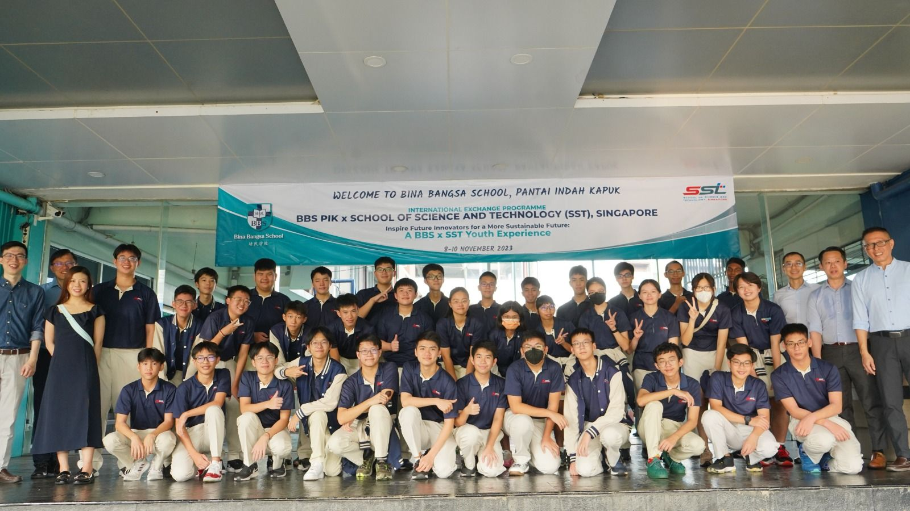

Jarkata Trip
IDP trip to jarkata for an exchange program.
The Experience & Learning
The Jarkata trip was an overseas trip held by the IDP department. Over at Jarkata, we had an exchange program with the Bina Bungsa School students, where we experienced the school life that they had. It was quite a surprising as it was quite different from our school life. They held their lessons in air-conditioned rooms, where they had a lot more subjects than us. They even had business lessons. I got a cultural shock as the setting in the school was a lot less formal, and the students were very casual with their teachers as well.

Besides the exchange program, we also went to visit Gojek HQ, where we learnt more about how Gojek operated, as well as their principals, their core values, and how life was as a startup company. We also did an exercise where the IDP classes split into teams to ideate on problem statements that were given to us. Afterwards, we all gave a presentation on the ideas that we came up with and the best ideas received a prize.

Furthermore, we also went to a UNESCO world heritage site, where we learned more about the older cultures in Indonesia and their History. It was quite enriching as the way of life of the older tribes is something very unique and cannot be observed in the current age. It also broadened my perspectives as a person as the exhibitions allowed me to put my feet in their shoes and was overall very enriching.

We visited Charged, an e-mobility startup company, where we learnt how the e-motorcycles are being made in the factory that they have. It was very interesting as we got more insight on how startup businesses ran, as well as how motorcycles were made. The process was much simpler than I could have imagined as the most complicated system was their circuitry. The trip to Charged was all around an enlightening one.